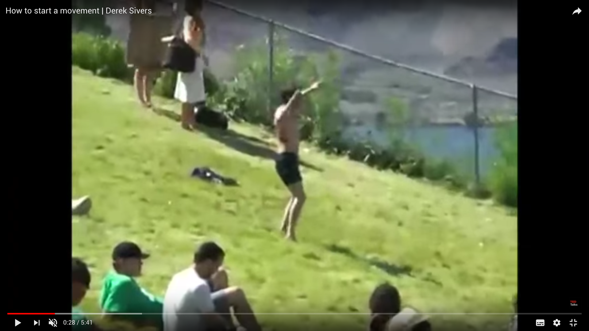
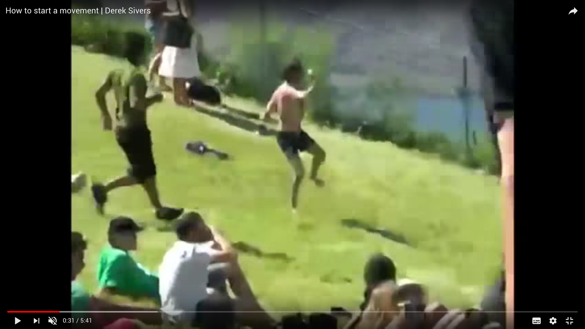
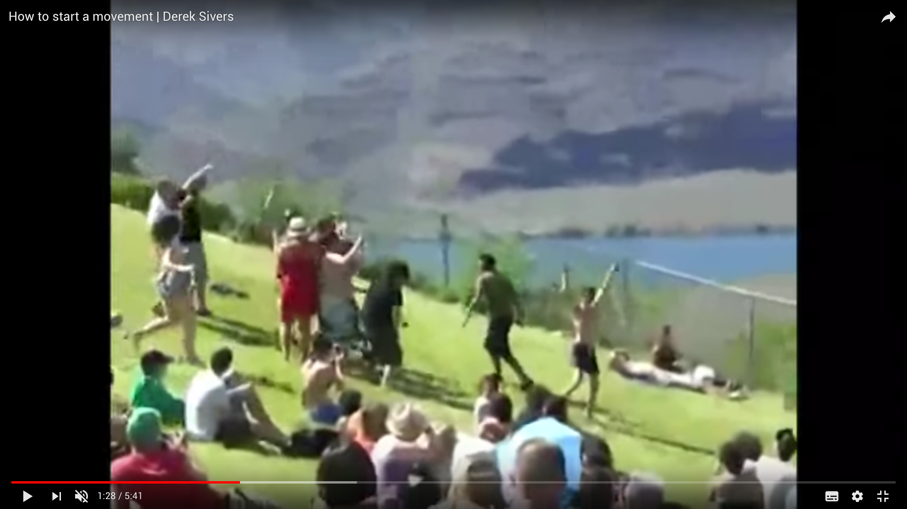
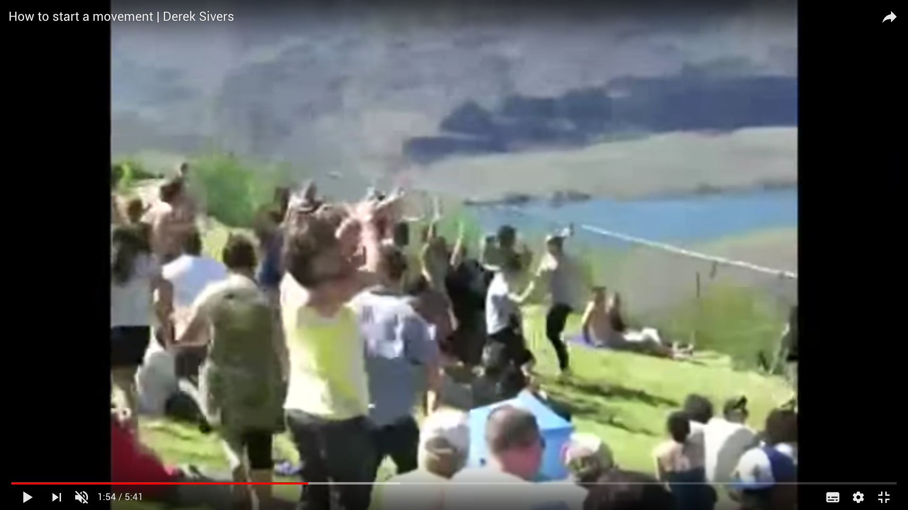
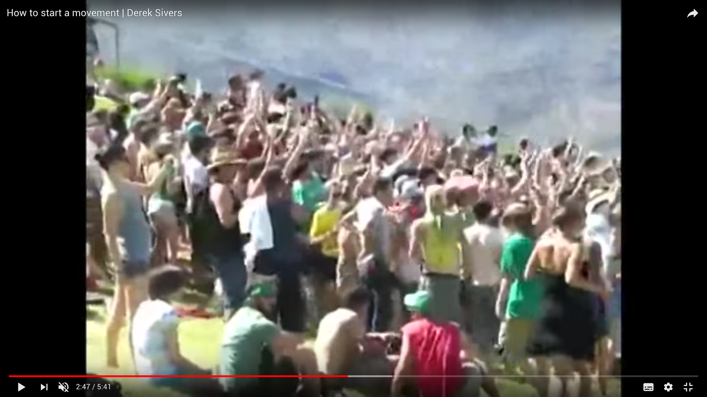
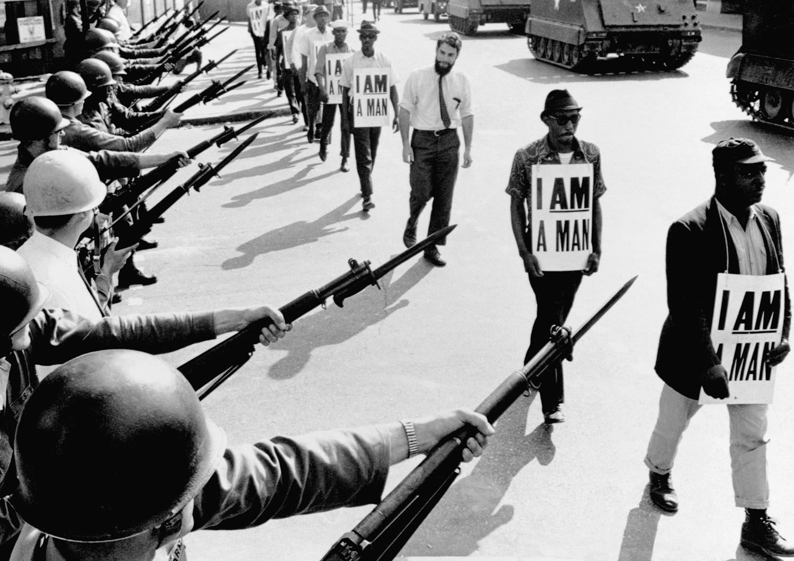

Society, We all know there's something wrong and we know it all along. Sincerity, You may think there's no one else till they put you on a shelf. Society, Pay your taxes stand in line help them plan for your demise. Society, Crush the weak to get your share cause nobody's playing fair.1
Those were the words that I was shouting along with my fist, high up the air, amongst hundreds of other people during a Pennywise (Californian punk-rock band) show in 2014. Punk-rock was introduced to me as a tool to release refurbished energy and it gave me enormous amounts of adrenaline in return. One could say, that it gave me the urge to do something with that adrenaline but I was not sure what it was exactly. Back then I was easily influenced by the fast songs and explosive guitar and bass riffs, although I never actually listened to the expressive lyrics that were being sung. The moment I started paying attention to what was being said and discovered that there was an underlying message in those songs, was the moment that I realised that punk-rock was not just about playing fast three-chord songs and an act of rebellion. It was a collective that strived for justice and equality. A collective that consists of people who played in bands, people that worked at record studios recording the songs of the bands, people that worked at record labels who sold the recorded songs of bands, people that owned and worked at venues that provided a space for bands and their audience to connect.
Without any doubt I can tell that I felt strong and powerful during that concert in 2014, by the idea that I was being part of something that was bigger than myself or any other individual. I was part of a group. A group consisting of people who are all different on one hand but on the other hand they all have something in common: the reason to believe that political agendas and fascist societies can be changed. Changed by groups of people who are tired of being pushed around by others, tired of other people telling them what to do, how they should do it, or even better; telling them what they can not do. And how do they convey others that they want change? They rise up, they gather and together they form a bigger whole and that is how a movement is born. That is also the reason why I see punk-rock not only as a music genre, I see punk-rock as a movement.
Not so long ago, while cycling to school I witnessed a big protest march against police violence through the streets of The Hague. I was fascinated by seeing so many individuals working together to express their frustration in a nonviolent way, that it reminded me of that concert in 2014 where I was also feeling stronger by being surrounded by people who are having a common believe. Being part of a movement one needs to have the confidence and willingness to stand up and let others hear their voice. It is not about someone being right, it is about someone voicing an opinion that is not being heard and asking for a dialog.
Nowadays, with many political events that include injustice and fascism happening all around the world, the numbers of movements (or members of already existing movements) are growing fast. Where are we standing as educated political designers in this matter, and how do we react on it? The aesthetics and agendas of 70’s and 80’s punk-rock movement were striking and provocative, not only nation wide but globally. Still nowadays the visual communication of the punk-rock movement is considered to be striking. Around me I noticed that a lot of techniques and tactics, that were used to distribute the anti-fascist ideologies, are being used in contemporary graphic design practices. What were this specific tactics and methods that made the face of punk-rock so provocative and are those tactics and methods still relevant in contemporary provocative and activist design projects?
Although the revolutionary and provocative aspect of contemporary design projects appears to be a development of the 21st century, its methods and techniques are actually an aftermath of the 70’s/80’s punk-rock movement. With projects all around the world that strive for a good cause and equal rights, designers use methods that are circulating for years. The ever growing popularity of the internet, make those methods easily shared and developed for further provocation. Which is needed, because one can see the western society moving towards the radical right wing. People are starting to not look further than their own standards, and consider standards from non western countries as ‘not normal’. Therefore I believe that it is a necessity that society needs constant reflections to keep itself critical and smart. This reflection can be provided by many people, however artists and designers have the ability to show new perspectives in visual ways that would occur to be shocking, but striking and therefore, mind changing. The punk-rock movement was being provocative with their agendas and visuals, and under the guise of never change a winning team, I believe that contemporary activist and provocative design projects use the methods and techniques from the punk-rock movement very consciously.
1. Jim Lindberg, 1999. Greed, Straight Ahead. Pennywise, Epitaph Records
What is a movement?





2. Derek Sivers, 2010. How to Start a Movement, TED Talks
https://www.ted.com/talks/ derek_sivers_how_to_start_ a_movement?
3. Alma Escamilla-Anguiano, 2016. Sociology 1301 Final Exam Flash Cards. https://quizlet.com/12411477 /sociology-1301-final-exam-flash-cards/
4. Cyrus Ernesto Zirakzadeh, 2011. Social and Political Movements. Sage Publications Ltd
A movement can be subdivided into three categories, which are Political, Social and Artistic. According to, writer, entrepreneur and avid student of life (as he explains himself), Derek Sivers a movement starts with a leader who is standing up and addresses an issue that to him or her is important for others to be aware of. The turning point is when the first follower shows up and joins the leader. This has to happen in a public space and should be seen by everyone, because the core of a movement is that they have to be visible. By joining the leader as the first follower it will indicate that it is rather easy to join a group for future followers and soon others will join. When that happens a movement is born.2 When two or more people who interact with each other, have a common belief and collectively stand united, one can consider this to be a so called social group.3 When this group works together and strives to obtain a political goal one can call this a political movement. The difference between a social and a political movement is, according to Cyrus Ernesto Zirakzadeh, that social movements refers to purposeful undertakings by people who do not hold positions of authority or wealth, but who wish to redirect their society towards new goals and values by bypassing or defying those in power.4 And political movements have the exact same actions, but the goals that a political party is striving for, requires legislation to actually make the change happen.
Political Movement
For a movement to achieve their goal or to state their opinion a well coordinated group action takes place. This group action consists most of the time a situation where people from agencies take action at the same time since they realize that to achieve their goal, acting together is a necessity rather than acting individually. Group action is more likely to occur when the individuals within the group feel a sense of unity with the group, even in personally costly actions. This kind of movement is called a social movement. A sociologist called Charles Tilly deconstructs social movements into three parts: contentious performances, displays and campaigns where the followers of the movement make collective claims on others.
One of the most famous examples of a non-violent intended social movement which transformed to a political movement was the African-American Civil Rights Movement in 1968 started, coordinated and executed by Dr. Martin Luther King Jr. The whole Civil Rights Movement helped put civil rights at the top of the agenda of reformers in the United States.

The Civil Rights Movement consists of multiple groups and movements who all strived for a common goal which was to end racial segregation and discrimination. For years Afro-American citizens were treated unequally and for years they were fighting for equal rights, although they were fighting for so long it was the 1950’s when the bubble bursted. All kinds of groups and organisations called on their members to rise up and take action. The word was quickly spread through churches and brotherhoods which had a lot of power in that time within the movement. They asked their members and followers that it was enough and that everyone should express their dissatisfaction. This resulted in non-violent intended protests which included boycotting public places and public transport. The later on called leader of the movement was Martin Luther King, Jr. He was the one who dared to take the first step to show his followers that if he could do it everyone else could do so as well. For approximately thirteen years the movement was organizing actions throughout the whole country to finally receive a change in the American agenda.
One would think that when a movement fights for thirteen years and succeeded to change a country’s agenda, the problem would be solved and it would not occur again. Wrong. Fifty years later, same country, same problem, is history repeating itself? Since the arrival of Donald Trump in the oval office, racial injustice climbed its way up very fast according to more that six out of 10 Americans according to a Quinnipiac University poll which took place in March 2017.